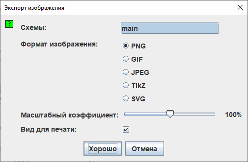
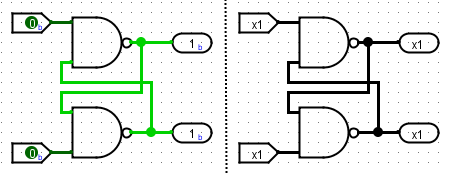

Экспорт изображения
Когда вы выбираете пункт меню | Файл | → | Экспорт изображения... |, Logisim открывает диалоговое окно со следующими настройками.

Настройки экспорта
- Схемы: список, в котором вы можете выбрать одну или несколько схем для экспорта в графические файлы. (Пустые схемы в списке не отображаются).
- Формат изображения: вы можете сохранять файлы в форматах PNG, GIF, JPEG, TikZ и SVG. Рекомендуется использовать формат PNG: формат GIF устарел, а сжатие JPEG вносит искажения (артефакты) в контрастные линии схем, так как этот формат предназначен для фотографий.
- Масштабный коэффициент: этот ползунок позволяет изменить масштаб сохраняемых изображений.
-
Вид для печати: включает отображение схемы в режиме печати (без цветных значений проводников и фоновой сетки).

Этот режим отображения также можно включить в настройках приложения на вкладке «Макет» (параметр «Вид для печати»). Это изменит стиль отображения в вашей рабочей области.
После нажатия кнопки ОК Logisim откроет диалоговое окно сохранения файлов. Если выбрана одна схема, укажите имя файла, под которым она будет сохранена. Если выбрано несколько схем, укажите директорию для сохранения; файлы в ней будут названы автоматически на основе имён соответствующих схем (например, main.png).